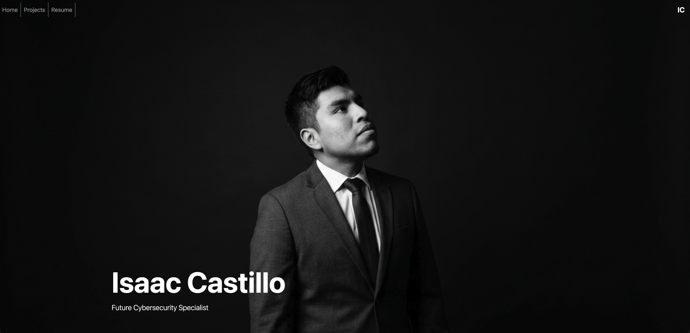
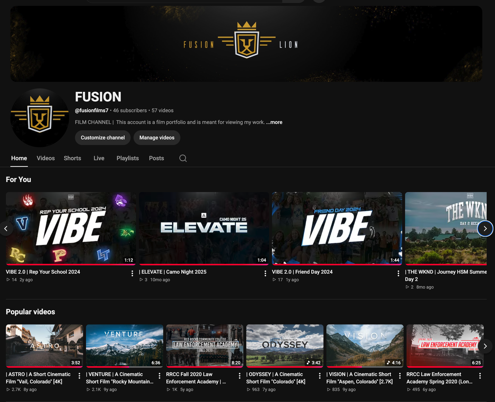

This is my first website, built from scratch using HTML, CSS, and Bootstrap framework. With no prior experience in web development prior to August 2026, this project demonstrates my ability to learn and apply new skills quickly. The website features a responsive design, a functional navigation bar that responds to different screen sizes, and a visual layout of my projects, resume and personal skills.
FUSION Youtube Channel
FUSION is my Youtube film portfolio that is currently still be added to. Since starting this project in January 2016, I have gradually added to it by doing various film projects, inclduding a short film documentary on my time in South Korea, travel videos of my adventures around Colorado, and most recently a series of hype videos for youth events for churches. What started off as a hobby and freelance work for myself, I have landed myself in positions where I get paid per project which has been a great opportunity for me to grow as a filmmaker.
FUSION Youtube Channel